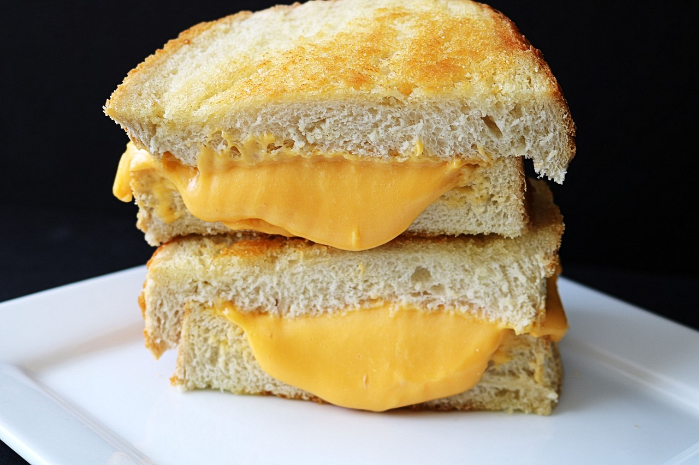

Vegan, Gluten-Free Grilled Cheese

Description
A grilled cheese to impress your vegan girlfriend...Oh, the GF stands for gluten-free? Well, she might like that too.
We tend to think a grilled cheese can't be done without real cheese from a cow. Poppycock! With the right vegan cheese and a little chef's secret, you'll be on your way to a Gluten-Free, Guilt Free, GirlFriend-GratiFying grilled cheese sandwich!
Ingredients
- Two (2) slices of gluten-free bread (your choice)
- One (1) slice of vegan cheddar or American-style cheese
- Vegan mayonnaise
- A small glass or vial of cool (not cold) water, preferably filtered (This is possibly the most important ingredient!)
- A lidded, ungreased non-stick pan, or a lidded metal frying pan greased with light cooking spray
Steps
- Lightly grease your pan if it is metal, otherwise leave non-stick pan ungreased.
- Heat the pan over medium-high heat.
- Spread mayonnaise on one side of each bread slice. Place one slice of bread mayo side down on heated pan. Top with cheese slice.
- Allow the first slide to brown slightly. Then, pour about a thimble-full of water to one side of the pan. Be careful not to let it touch your bread. Cover the pan immediately.
- Reduce heat to medium-low to prevent burning the bread while you allow the trapped steam to melt the cheese. If there's too little steam, you can remove the lid, add a little more, and cover again.
- When the cheese is melted to preference, remove the lid, careful to avoid burning yourself with the escaping steam. Place the remaining bread slice atop the cheese, mayo side up.
- Use a non-stick ready spatula (or a metal spatula for a metal pan) to carefully, but confidently flip the sandwich. Allow the other side to brown to preference. Scarf!
Tips:
- Sliced vegan cheese can have a higher melting point than dairy cheese. The steam environment created by adding a little water and covering, accelerates melting.
- The trick with this dish is both browning the bread without burning it while also melting the cheese. Without the steam, the cheese won't melt quickly enough and you will either burn your bread or end up with unmelted cheese. Practice getting the timing and steam right!
- If your first slice of bread is ready to flip but the cheese is not fully melted, add your second bread slice, flip, then bring the temperature up to medium or medium high. Add water again, making sure it immediately starts steaming. Cover and watch for the cheese edges to melt and touch the pan.
- It may sound hard, but I promise it can be done! You can do it! Believe in yourself!